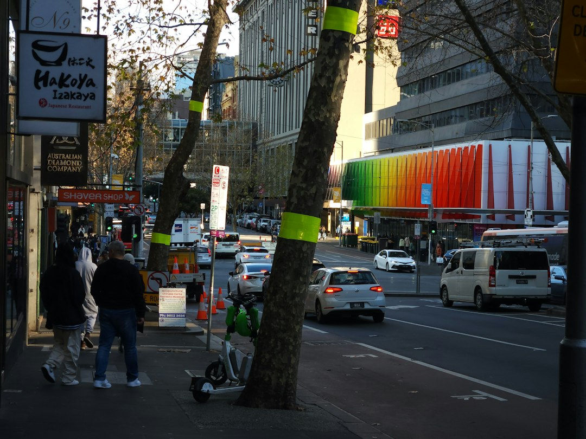

The directory describes 9 provider types for Melbourne dining and a simple search, compare and contact flow. Diners can browse cross-checked listings, read reviews, view photos, compare services and pricing, then contact venues by call, email or quote form. Use it to shortlist categories and areas first, then confirm menus, trading details and booking availability with the venue before relying on a plan.
For diners comparing melbourne restaurants, the useful question is not just where to eat, but how to filter category, location, reviews and booking details without turning dinner into admin.
Melbourne Restaurants Explained
The directory at Best Melbourne Restaurants is best treated as a shortlisting tool, not a final booking confirmation. Its published page says users can browse cross-checked business listings, read reviews, view photos, compare services and pricing, and get in touch directly. That makes it useful at the early decision stage, when a broad dining idea needs to become a smaller set of venues worth checking.
Start with the category that matches the occasion, then use location and review signals to reduce the field. The published categories include Asian, casual and family, fine dining, Italian, modern Australian, seafood, steak and grill, vegetarian and vegan, plus general restaurants. Those labels are broad, so the next step is to open the venue profile and confirm the details that affect the actual meal.
- Use the category as a first filter, not a guarantee of menu fit.
- Check whether a listing points to menus, reservations, private dining or functions.
- Confirm current trading details and booking availability with the venue.
Choosing by occasion, not just cuisine
A useful shortlist usually begins with the occasion. A family dinner, a quiet booking, a group function and a date-night meal can sit inside the same suburb search, but they need different checks. The published categories separate casual and family from fine dining, and the Lucy Liu Kitchen and Bar listing refers readers to official venue information for menus, reservations and private dining or functions.
For a relaxed meal, useful checks include menu range, booking ease and whether the venue description fits the group. For a sharper occasion, look for reservation details and whether private dining or function information is available. For plant-based diners, seafood diners or steak-focused groups, category fit matters because the wrong shortlist can waste time before anyone sees a menu.
When several venues look suitable, compare the profile content before making contact. Reviews can help with context, but the directory also tells users to compare services and pricing, so the review score should sit beside practical details rather than replace them.
Local searches that answer a real dining question
Location filters help when they answer a practical question about travel, group convenience or the style of venue being considered. The published page shows popular searches for Asian restaurants in Richmond and Carlton, vegetarian and vegan options in St Kilda, Richmond, Collingwood, Fitzroy and Carlton, seafood in Northcote, South Yarra, Docklands and Southbank, and steakhouses in Glen Waverley.
Those examples are useful prompts, not proof that every category is evenly represented in every area. A waterfront-adjacent plan might make Docklands or Southbank worth checking for seafood. A northside or inner-north plan may make Fitzroy, Collingwood, Carlton, Richmond or Northcote relevant when the category matches. Glen Waverley appears in the steak and grill location examples, so it is a practical starting point for that style of search.
The safer workflow is suburb, profile, confirmation. Shortlist an area only when it suits the group, then open each relevant profile and check the live details before treating it as a booking option.
What to verify before booking
The directory describes a three-step flow: search by provider type or location, compare reviews, photos, services and pricing, then contact the business directly by call, email or a quote form. That sequence works because a listing can organise the search, while the venue remains the place to confirm what applies to the date, table size and menu.
- Check the category against the meal you actually want.
- Review the profile for photos, service notes and pricing cues.
- Use the venue's direct contact or booking path to confirm availability.
- Ask about menus, private dining or functions when those details matter.
This is especially relevant for group meals, special diets and occasions where assumptions can change the night. The directory can move a diner from browsing to a sensible shortlist, but direct confirmation is the step that turns that shortlist into a booking.
For venue owners reading the listings
The page also includes a path for businesses. It says venues can claim a free listing or upgrade to Pro for priority placement, photos and lead tracking. From a diner perspective, that means some profiles may contain more presentation detail than others, so compare the substance of each profile rather than assuming every listing has the same depth.
For a venue, the useful lesson is that diners are likely comparing category fit, location, review context, photos, services and pricing before they make contact. A complete profile can reduce avoidable questions and make the next action clearer. For a diner, a shorter profile may still be relevant, but it may need more direct confirmation before it belongs on the final shortlist.
The advertised contact options, call, email and quote form, suit different requests. A simple dinner booking may only need a reservation path, while a function or private dining enquiry usually needs more detail.
- Pick the occasion. Decide whether the meal is casual, family-focused, fine dining, group dining or category-specific before comparing venues.
- Filter the shortlist. Use category and location pages to reduce the options to venues that plausibly fit the plan.
- Read the profile. Compare reviews, photos, service details and pricing cues where the listing provides them.
- Confirm directly. Use the venue's direct contact or booking information to check current menus, trading details and availability.
| Decision point | Useful when | What to check |
|---|---|---|
| Category first | You know the cuisine or dining style | Asian, casual and family, fine dining, Italian, modern Australian, seafood, steak and grill, vegetarian and vegan, or general restaurant listings |
| Location first | The group needs a convenient area | Use the listed area examples, then confirm the venue suits the occasion |
| Profile first | Several venues look similar | Reviews, photos, services, pricing cues and direct contact options |
| Venue confirmation | You are ready to book | Current menu, trading details, reservations, private dining or function availability |
Common questions
Is the directory enough to make a booking decision? It is enough to build a shortlist. The published page directs users to compare listings, then contact venues directly, so final menu, trading and booking details should be confirmed with the venue.
Which categories can diners browse? The listed provider types include Asian, casual and family, fine dining, Italian, modern Australian, restaurants, seafood, steak and grill, and vegetarian and vegan.
Does the page include area-based restaurant searches? Yes. The published examples include category searches in Richmond, Carlton, St Kilda, Collingwood, Fitzroy, Northcote, South Yarra, Docklands, Southbank and Glen Waverley.
What should group diners check first? Group diners should check whether a profile or venue information mentions reservations, private dining or functions, then confirm availability directly before relying on the listing.
This guide covers how diners can use the published restaurant listings to shortlist categories, areas and venue checks across Melbourne.